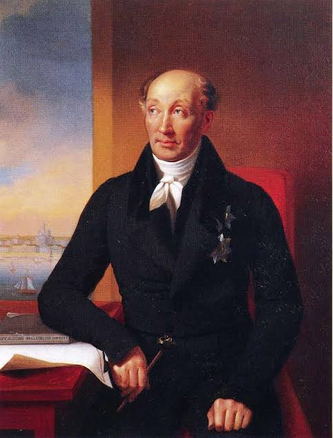

Михаил Сперанский
1772-1839
Биография
М. М. Сперанский - русский общественный и государственный деятель, реформатор, законотворец периода правления Александра I и Николая І. Будучи незнатного происхождения, своими выдающимися способностями и трудолюбием смог заслужить доверие императора Александра I и возглавить реформаторскую деятельность в России.
Его деятельность часто вызывала опасения и критику со стороны власти, в результате чего он неоднократно отстранялся от дел, из-за обвинений в изменах.
Он разработал первый в истории России проект конституции и предложил реформы, многие из которых опережали своё время и были реализованы лишь десятилетия спустя.
Основные достижения
- Указ о вольных хлебопашцах (1803)
- Проект создания Государственного совета (1810) и государственной Думы (не был реализован)
- Разработка проекта реорганизации Сената (1811)
- Полное собрание законов Российской империи (1826–1830)
- Свод законов Российской империи (1832)